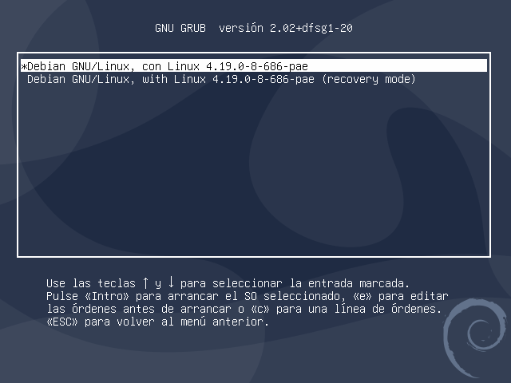

Tema 4: Arranque y parada del sistema y servicios.
Programación y Administración de Sistemas
(2023-2024)
1 Objetivos y evaluación
Objetivos de aprendizaje
Describir todas las fases del proceso de arranque del sistema GNU/Linux, estableciendo qué elementos hardware y, sobre todo, software intervienen.
Explicar qué misión tienen en el arranque los siguientes componentes: iniciador ROM, programa cargador, núcleo del sistema operativo,
initrdy procesoInit.Configurar los distintos parámetros del programa cargador GRUB y utilizar el modo interactivo.
Distinguir la diferencia entre modo de ejecución monousuario y multiusuario.
Explicar los problemas de seguridad asociados al modo monousuario.
Conocer systemd como sustituto para el Init de GNU/Linux
Enumerar los pasos necesarios para la configuración del sistema en modo multiusuario.
Explicar el concepto de niveles de ejecución y las funciones típicas de cada nivel.
Configurar los servicios de cada nivel de ejecución u objetivos.
Arrancar, parar, listar, añadir y eliminar servicios en cada nivel.
Enumerar las acciones que se llevan a cabo durante la parada del sistema.
Utilizar la herramienta
shutdown.Enumerar posibles causas de caídas del sistema operativo.
Enumerar posibles problemas durante el arranque del sistema operativo.
Conocer los principales mecanismos para consultar los logs del sistema operativo.
Evaluación:
Cuestionarios objetivos.
Pruebas de respuesta libre.
Tareas de administración.
Como en otros temas, en estos apuntes se dan muchos detalles que por supuesto no hay que memorizar. Si hay que saber en qué directorio se encuentran el/los ficheros de configuración pero no los parámetros de memoria, estos los ponemos aquí para conocer las posibilidades de cada herramienta.
2 Introducción
Arranque y parada del sistema
Procesos de arranque y de parada:
Arranque: el sistema se prepara para ser usado por los usuarios.
Parada: el sistema se deja consistente (p.ej. vaciar la caché).
El administrador deberá saber qué ficheros controlan estos procesos y cómo lo hacen, para reconocer situaciones de error y solucionarlas.
Procesos sencillos: se basan en un conjunto de ficheros de configuración y/o de guiones shell que determinan y controlan los procesos.
Arranque
Fuente [Nemeth et al., 2018].
3 Proceso de arranque
Proceso de arranque
Fuente [Nemeth et al., 2018].
Proceso de arranque: fases
Dos fases:
Arranque del hardware.
Arranque del Sistema Operativo (SO).
Proceso de arranque: programa cargador
El programa cargador (master boot program o boot program) está en los primeros sectores del disco y tiene un tamaño prefijado.
Estos sectores se conocen como Master Boot Record (MBR, o Volume Boot Record).
Es el encargado de cargar el núcleo (o kernel) del SO y pasarle el control.
El iniciador ROM y el SO tienen un acuerdo sobre el programa cargador (ubicación, dirección de arranque y tamaño).
Proceso de arranque: diferencia BIOS vs UEFI
Fuente Ask Ubuntu.
Puedes consultar las entradas de arranque UEFI con el siguiente comando: efibootmgr -v.
En Windows puedes hacer algo similar con: bcdedit /enum firmware.
Proceso de arranque: núcleo del S.O.
El núcleo del S.O. continúa el proceso de arranque:
Realiza una comprobación del hardware del sistema.
Se prepara a sí mismo para ejecutar el sistema inicializando sus tablas internas, creando estructuras de datos necesarias, etc.
A continuación crea el proceso
Inity le pasa el control.
El núcleo (Linux) es cargado inicialmente en memoria, y permanece de manera residente durante el funcionamiento del sistema, controlando la ejecución del resto de software (GNU).
Parte de este código se encuentra en módulos del núcleo:
Minimizar la cantidad de código que se carga en memoria.
Maximizar la modularidad.
Nota: puedes ver los módulos del núcleo activos en Linux con lsmod.
Proceso de arranque: initrd
Para arrancar el sistema se necesita leer del disco los módulos del kernel que permiten leer el disco.
Proceso de arranque: initrd
initrd (Init RAM Disk):
Las características del arranque pueden implicar que el medio desde el que se carga el núcleo provenga de un sistema de ficheros concreto (p.ej.
ext4) o incluso desde la red.Para ello, se necesitarán módulos específicos, alojados en el initrd.
El programa cargador le dice al núcleo la posición del initrd.
Funcionamiento:
El núcleo carga primero el initrd.
Utilizando el initrd, se cargan los módulos necesarios.
Entonces el núcleo continuará el proceso de arranque.
Proceso de arranque: proceso Init
El proceso
Init(/sbin/initcon PID = 1) termina el proceso de arranque, dejando el sistema en modo multiusuario, preparado para que los usuarios trabajen en él.Usa una serie de scripts que le indican las acciones a realizar.
Tareas que realiza el proceso Init:
Chequea los sistemas de ficheros.
Monta los sistemas de ficheros permanentes.
Activa las áreas de swapping o intercambio.
Activa los demonios y la red (NFS, NIS, etc.).
Limpia los sistemas de ficheros (borra los directorios temporales).
Habilita el login a los usuarios del sistema.
Proceso de arranque: por dónde vamos
4 Gestor de arranque GRUB
Gestor de arranque GRUB
GRUB: GRand Unified Bootloader:
GRUB se instala en el master boot record (MBR) o como UEFI boot loader y hace de las funciones de master boot program (MBP, programa cargador de arranque).
Pregunta qué SO arrancar: p.ej. Linux o Windows.
Si la respuesta es Linux \(\Rightarrow\) carga el núcleo solicitado y le pasa el control para que el arranque continúe.
Si la respuesta es Windows \(\Rightarrow\) pasa el control a Windows que realiza su arranque.
Gestor de arranque GRUB: lo básico
/etc/default/grub: archivo de configuración general de GRUB. Habitualmente sólo cambiaremos este.scripts incluidos en la carpeta
/etc/grub.d/.Archivo fundamental de configuración:
/boot/grub/grub.cfg. ¡No editar a mano!. Este archivo se genera a partir del comandosudo update-grub2, utilizando todos las opciones en/etc/default/gruby los scripts/etc/grub.d/
Si compartes máquina con Windows este periódicamente borra el MBR y es necesario reinstalar GRUB desde una distribución live (sudo grub-install /dev/sda).
A través del cargador de arranque o un USB maligno se pueden ganar privilegios en una máquina
[OPCIONAL] GRUB: configuración general
Contenidos de la carpeta /etc/grub.d/ (en principio, no modificar nada):
/etc/grub.d/00_header: Cabeceras./etc/grub.d/05_debian_theme: Aspecto visual del menú, colores, temas, imagen de fondo.../etc/grub.d/10_linux: Este archivo contiene mandatos y scripts que se encargan del kernel Linux de la partición principal (se incluyen todos los núcleos presentes en/boot)./etc/grub.d/20_*: Aplicaciones third party (20_memtest86+,20_linux_xen...)/etc/grub.d/30_os-prober: Este archivo contiene comandos y scripts que se encargan de otros sistemas operativos./etc/grub.d/30_uefi-firmware: Este archivo contiene comandos que automatizan la extracción de configuraciones incluidas en la partición EFI.
GRUB: algunas opciones (I)
Fichero /etc/default/grub:
Este fichero si es editable (
00_headerlee su contenido).GRUB_DEFAULT=0: entrada por defecto para el arranque. Si ponemossaved, será seleccionada por el administrador (comandosgrub-set-default, permanente, ygrub-reboot, un solo arranque).GRUB_SAVEDEFAULT=true: la entrada por defecto es siempre la última seleccionada.GRUB_HIDDEN_TIMEOUT=0:Muestra una pantalla en negro o con una imagen, durante el número de segundos indicado, antes del menú de arranque (pulsar una tecla para saltarla). Es 0 cuando solo hay Linux (el menú puede aparecer con Shift).
Suele no usarse cuando hay múltiples sistemas (comentado).
GRUB_HIDDEN_TIMEOUT_QUIET=true: sin cuenta atrás.
[OPCIONAL] GRUB: algunas opciones (II)
Fichero /etc/default/grub:
GRUB_TIMEOUT=10: número de segundos hasta seleccionar entrada por defecto.GRUB_CMDLINE_LINUX=opciones: pasar opciones de arranque al kernellinux(modo normal o recuperación).GRUB_CMDLINE_LINUX_DEFAULT=quiet splash: pasar opciones de arranque al kernellinux(modo normal).GRUB_TERMINAL=console: desactivar modo gráfico.
[OPCIONAL] GRUB: algunas opciones (III)
Fichero /etc/default/grub:
GRUB_DISTRIBUTOR=lsb_release -i -s 2> /dev/null || echo Debian: obtener el nombre de la distribución.GRUB_DISABLE_LINUX_UUID="true": no utilizar el UUID del dispositivo raíz (utilizar nomenclatura tradicional/dev/sda).GRUB_GFXMODE=640x480: seleccionar manualmente la resolución para el menú.GRUB_INIT_TUNE="480 440 1": hacerbeepantes del menú de inicio (tempo [pitch1 duration1] [pitch2 duration2]...).GRUB_BACKGROUND: imagen de fondo.
GRUB: modificación de parámetros al arrancar
GRUB permite (durante la selección del SO):
Editar las entradas:
Pulsar tecla
e, permite modificar las entradas de arranque para solucionar errores.Los cambios no son permanentes, solo sirve para probar.
Consola interactiva GRUB: pulsar la tecla
c. Permite ejecutar comandos para arreglar el arranque (seleccionar otroinitrd, cargar módulos...).Terminología de GRUB, numerando los dispositivos según los reconozca la BIOS empezando en cero:
Nombres de dispositivos:
(<t><n>,<np>)
(hd0,0)\(\Rightarrow\)/dev/sda1Nombres de ficheros
(hd0,0)/boot/grub/grub.cfg
Fragmento /boot/grub/grub.cfg (Linux)
menuentry 'Debian GNU/Linux, con Linux 5.4.0-0.bpo.3-amd64' --class debian --class gnu-linux --class gnu --class os $menuentry_id_option 'gnulinux-5.4.0-0.bpo.3-amd64-advanced-bf8474c5-958e-4cca-a568-4828b2310fda' {
load_video
insmod gzio
insmod part_msdos
insmod ext2
set root='hd0,msdos1'
search --no-floppy --fs-uuid --set=root bf8474c5-958e-4cca-a568-4828b2310fda
echo 'Cargando Linux 5.4.0-0.bpo.3-amd64...'
linux /boot/vmlinuz-5.4.0-0.bpo.3-amd64 root=UUID=bf8474c5-958e-4cca-a568-4828b2310fda ro initrd=/install/gtk/initrd.gz quiet
echo 'Cargando imagen de memoria inicial...'
initrd /boot/initrd.img-5.4.0-0.bpo.3-amd64
}
menuentry 'Debian GNU/Linux, with Linux 5.4.0-0.bpo.3-amd64 (recovery mode)' --class debian --class gnu-linux --class gnu --class os $menuentry_id_option 'gnulinux-5.4.0-0.bpo.3-amd64-recovery-bf8474c5-958e-4cca-a568-4828b2310fda' {
load_video
insmod gzio
insmod part_msdos
insmod ext2
set root='hd0,msdos1'
search --no-floppy --fs-uuid --set=root bf8474c5-958e-4cca-a568-4828b2310fda
echo 'Cargando Linux 5.4.0-0.bpo.3-amd64...'
linux /boot/vmlinuz-5.4.0-0.bpo.3-amd64 root=UUID=bf8474c5-958e-4cca-a568-4828b2310fda ro single initrd=/install/gtk/initrd.gz
echo 'Cargando imagen de memoria inicial...'
initrd /boot/initrd.img-5.4.0-0.bpo.3-amd64
} Fragmento /boot/grub/grub.cfg (Windows)
...
## BEGIN /etc/grub.d/30_os-prober ###
menuentry 'Windows 7 (en /dev/sdb1)' --class windows --class os $menuentry_id_option 'osprober-chain-DA3EBC4E3EBC2583' {
insmod part_msdos
insmod ntfs
set root='hd1,msdos1'
search --no-floppy --fs-uuid --set=root DA3EBC4E3EBC2583
parttool ${root} hidden-
chainloader +1
}
## END /etc/grub.d/30_os-prober ## Ejercicio: parámetros básicos de GRUB
- Cambia la imagen de fondo a la que quieras.
- Puedes poner la imagen en
/boot. - Para ello puedes copiar una imagen usando el navegador de archivos,
scp, descargarla concd /boot/ && wget "URL"… - Ponle un nombre fácil, e.g.
bg.png - En
/etc/default/grubañade:GRUB_BACKGROUND="/boot/bg.png"
- Quizás no te funcione a la primera. Revisa:
- Ruta entre comillas.
- Formato imagen (¿imagemagick?).
apt install imagemagickconvert imagen.webp imagen.png
- Regenerar ficheros de configuración con
sudo update-grub2
- Cambia el timeout.
5 Modo monousuario/multiusuario
Opciones avanzadas y modo monousuario

Modo monousuario
Estado del sistema definido para realizar tareas administrativas y de mantenimiento, que requieren un control completo y no compartido.
Sólo realiza el montaje del sistema de ficheros raíz (
/), los otros SF están disponibles pero no están montados.Se puede acceder a todo el sistema, pero:
Muy pocos demonios están en ejecución, sólo los necesarios.
Muchas utilidades no están activas (impresión, red).
Sólo las órdenes del SF raíz están disponibles (si
/usrestá en otra partición, no está montado).
Para entrar en modo monousuario el proceso Init crea el shell por defecto (
/bin/sh) como usuario root:- Pero antes se ejecuta la orden
/sbin/sulogin, que pide la contraseña derootpara dejar entrar al sistema.
- Pero antes se ejecuta la orden
Modo monousuario
¿Cómo se entra en modo monousuario?
Manualmente, indicando al cargador una opción o parámetro: mediante la interfaz de edición de GRUB, opción
singlea la entrada del núcleo.Automáticamente, si hay problemas en el proceso de arranque que el sistema no puede solucionar por sí solo (p.e. problemas en el SF que
fsckno puede solucionar, errores en los ficheros de arranque).
Modo monousuario
¡Problema!: si cambiamos las opciones de GRUB y ponemos
init=/bin/sh/init=/bin/bash, no se llama asulogin.Permite tener acceso a todo el sistema, estando delante del ordenador.
Ejercicio: hacerse root sin la contraseña
Has conseguido entrar en la sala de servidores echándole laxante en el café al guardia de seguridad. ¿Podrías hacerte con el usuario root del sistema y ponerle la contraseña que quieras?
Para conseguirlo puedes hacer algo extraordinario como mirar la bibliografía del tema.
Modo monousuario
Solución: no existe una solución única sino un conjunto de medidas de mitigación para proteger ante accesos físicos al sistema.
Por ejemplo, solicitar contraseña para la entrada de administración.
- El password se puede generar usando (copiala al portapapeles):
grub-mkpasswd-pbkdf2 Enter password: Reenter password: Your PBKDF2 is grub.pbkdf2.sha512.10000.086EB0CC8CB1E39E2...- Fichero
/etc/grub.d/40_custom(o donde esté la entrada).
set superusers="user1" # Reemplazar grub.pbkdf2... con la salida del comando anterior password_pbkdf2 user1 grub.pbkdf2.sha512.10000.086EB0CC8 ... # Este usuario no sería administracidor #password_pbkdf2 user2 grub.pbkdf2.sha512.10000.045EB0CC8 ...Ejecutar
update-grubo modificar la entrada de administración para que requiera password:--users user1.Reiniciar.
Modo monousuario
Vulnerabilidad en el sistema de contraseñas de grub y estrategias de mitigación:
Ejercicio: protege tu sistema de arranque
Añade un usuario y contraseña a GRUB.
Deshabilita el reinicio por teclado Ctrl+Alt+Del. Prueba esto usando el menú de Virtual Box o reiniciarás tu ordenador
Pasos arranque modo multiusuario (I/II)
Chequea el sistema de ficheros raíz con
fsck.Si al apagar el sistema, el sistema de ficheros se desmontó correctamente, no se chequea.
Sin embargo, algunos SOs con determinados SFs fuerzan el chequeo siempre, o cada cierto tiempo o cada cierto número de montajes sin chequear.
Si
fsckencuentra problemas que no puede solucionar “sólo”, lleva al sistema a modo monousuario para que el administrador realice el chequeo manual.
Monta el sistema de ficheros raíz en modo lectura-escritura.
Chequea el resto de SFs con
fsck(idem al punto 1).Monta el resto de SFs.
Activa las particiones de intercambio (swapping):
swapon -a.Activa las cuotas de disco:
quotacheck -ayquotaon -a.
Pasos arranque modo multiusuario (II/II)
Lanza los procesos servidores o demonios:
crond,atd,cupsd,syslogd...Activa la red.
Lanza los demonios de red:
apache2,nagiosd,sshd,ntpd,nfsd,rpc.mountd,slapd...Limpia los sistemas de ficheros:
/tmp, etc.Permite que los usuarios entren:
Crea las terminales, lanzando
gettyen modo texto, y el terminal gráfico, si es preciso.Borra, en caso de que exista, el fichero
/etc/nologin: Si el fichero/etc/nologinexiste, los usuarios (excepto root) no pueden entrar al sistema. Algunos sistemas lo crean al iniciar el arranque.
6 init y systemd
Niveles de ejecución en GNU/Linux
El SO puede estar en distintos niveles de ejecución (no solo modo monousuario y multiusuario).
En GNU/Linux, los niveles de ejecución son:
Nivel 0: Sistema apagado.
Nivel 1, s o S: Modo monousuario, rescue o troubleshooting.
Nivel 2: Modo multiusuario sin funciones de red.
Nivel 3: Modo multiusuario con funciones de red y terminales de texto.
Nivel 4: Sin usar, a redefinir por el administrador.
Nivel 5: Modo multiusuario con funciones de red e inicio de sesión gráfico.
Nivel 6: Sistema reiniciándose.
En Debian, por defecto, los niveles 2 al 5 son todos modo multiusuario con todas las funciones.
Niveles de ejecución en GNU/Linux (init)
/sbin/runlevel: saber en qué nivel está el sistema./sbin/telinit: cambiar de nivel de ejecución:telinit 1: a modo monousuario.telinit 6: reiniciar el sistema.telinit 3: cambiar al nivel 3.systemctl isolate multi-user.target\(\rightarrow\) cambiar al nivel 3 ensystemd.**
El nivel por defecto, establecido al arrancar, se encuentra:
En el fichero
/etc/inittab:id:2:initdefault:O con el siguiente comando (
systemd):systemctl set-default multi-user.target
Al arrancar mediante GRUB, al núcleo se le puede pasar como parámetro un número indicando el nivel en el que queremos arrancar. En este caso se obviará el nivel por defecto.
Systemd
Es un reemplazo del proceso
Initque viene incorporándose en GNU/Linux desde el año 2015.Amplía funcionalidades, pudiendo gestionar cosas que
Initno gestiona, por ejemplo el sistema de logs.Filosofía principal:
Mejorar la forma de expresar dependencias.
Permitir que se realicen más tareas en paralelo.
Reducir la carga extra que supone el intérprete.
Se gestiona mediante unidades (servicios) y targets (algo similar a los niveles de ejecución).
Systemd: controversia
Sistema muy complejo, causa algunas dependencias innecesarias, ficheros binarios vs texto…
Equivalencia de niveles de ejecución de init y systemd
systemd se encarga de dar soporte hacia atrás a guiones y niveles de Init.
Fuente [Nemeth et al., 2018].
Ficheros de inicialización
Personalizar niveles de ejecución \(\Rightarrow\) carpetas
/etc/rc?.d/, donde?es el nivel de ejecución.Todos ellos son ejecutados por Init durante el arranque.
Se ejecutan al arrancar o al cambiar de nivel:
El nombre del script empieza por S o K, seguido de dos dígitos y un nombre descriptivo:
K35smb K15httpd S40atd S50xinetd S60cups S99localLos ejecuta en orden alfabético, primero los K después los S, los dos dígitos establecen el orden entre todos los K y todos los S.
Ficheros K: detener demonios o matar procesos.
Ficheros S: lanzar demonios o ejecutar funciones de inicio.
Para cada nivel de inicialización, se especifica qué demonios tienen que estar activos o no.
Ficheros de inicialización
Carpetas
/etc/rc?.d/:Todos los ficheros son enlaces simbólicos al fichero con el mismo nombre descriptivo localizado en
/etc/init.d.Los scripts reciben varios parámetros:
start,stop,restart...Esto permite lanzar o relanzar demonios sin reiniciar el sistema.
rc ejecuta los ficheros K con el parámetro
stopy los S constart.Estos scripts se mantienen por retrocompatibilidad, se tiende a utilizar
systemdy el comandosystemctlque actúa sobre unidades descritas en/etc/systemd/system/para cada objetivosystemd.
Ficheros de inicialización
$ ls /etc/rc3.d/ -la
total 16
drwxr-xr-x 2 root root 4096 feb 7 21:32 .
drwxr-xr-x 161 root root 12288 mar 18 17:45 ..
lrwxrwxrwx 1 root root 27 sep 15 2023 K01speech-dispatcher -> ../init.d/speech-dispatcher
lrwxrwxrwx 1 root root 15 sep 15 2023 S01acpid -> ../init.d/acpid
lrwxrwxrwx 1 root root 17 sep 15 2023 S01anacron -> ../init.d/anacron
lrwxrwxrwx 1 root root 14 feb 7 21:32 S01atop -> ../init.d/atop
lrwxrwxrwx 1 root root 18 feb 7 21:32 S01atopacct -> ../init.d/atopacct
lrwxrwxrwx 1 root root 22 sep 15 2023 S01avahi-daemon -> ../init.d/avahi-daemon
lrwxrwxrwx 1 root root 19 sep 15 2023 S01bluetooth -> ../init.d/bluetooth
lrwxrwxrwx 1 root root 26 sep 15 2023 S01console-setup.sh -> ../init.d/console-setup.sh
lrwxrwxrwx 1 root root 14 sep 15 2023 S01cron -> ../init.d/cron
lrwxrwxrwx 1 root root 14 sep 15 2023 S01cups -> ../init.d/cups
lrwxrwxrwx 1 root root 14 sep 15 2023 S01dbus -> ../init.d/dbus
lrwxrwxrwx 1 root root 21 sep 15 2023 S01grub-common -> ../init.d/grub-common
lrwxrwxrwx 1 root root 20 sep 15 2023 S01irqbalance -> ../init.d/irqbalance
lrwxrwxrwx 1 root root 20 sep 15 2023 S01kerneloops -> ../init.d/kerneloops
lrwxrwxrwx 1 root root 17 sep 15 2023 S01lightdm -> ../init.d/lightdm
lrwxrwxrwx 1 root root 23 sep 15 2023 S01lvm2-lvmpolld -> ../init.d/lvm2-lvmpolld
lrwxrwxrwx 1 root root 20 sep 15 2023 S01mintsystem -> ../init.d/mintsystem
lrwxrwxrwx 1 root root 17 sep 15 2023 S01openvpn -> ../init.d/openvpn
lrwxrwxrwx 1 root root 18 sep 15 2023 S01plymouth -> ../init.d/plymouth
lrwxrwxrwx 1 root root 17 ene 30 14:09 S01postfix -> ../init.d/postfix
lrwxrwxrwx 1 root root 37 sep 15 2023 S01pulseaudio-enable-autospawn -> ../init.d/pulseaudio-enable-autospawn
lrwxrwxrwx 1 root root 15 sep 15 2023 S01rsync -> ../init.d/rsync
lrwxrwxrwx 1 root root 15 sep 15 2023 S01saned -> ../init.d/saned
lrwxrwxrwx 1 root root 23 ene 27 11:50 S01smartmontools -> ../init.d/smartmontools
lrwxrwxrwx 1 root root 15 sep 15 2023 S01uuidd -> ../init.d/uuidd
lrwxrwxrwx 1 root root 20 sep 15 2023 S01virtualbox -> ../init.d/virtualbox
lrwxrwxrwx 1 root root 19 sep 15 2023 S01zfs-mount -> ../init.d/zfs-mount
lrwxrwxrwx 1 root root 19 sep 15 2023 S01zfs-share -> ../init.d/zfs-share
lrwxrwxrwx 1 root root 17 sep 15 2023 S01zfs-zed -> ../init.d/zfs-zedSystemd
Es compatible hacia atrás con los scripts SysV.
Pero incorpora su propio mecanismo (más potente) de gestión de servicios.
En la carpeta
/etc/systemd/existen carpetas a distintos niveles con ficheros para distintos targets. Ejemplo:
# /etc/systemd/system/sshd.service
[Unit]
Description=OpenBSD Secure Shell server
After=network.target auditd.service
ConditionPathExists=!/etc/ssh/sshd_not_to_be_run
[Service]
EnvironmentFile=-/etc/default/ssh
ExecStartPre=/usr/sbin/sshd -t
ExecStart=/usr/sbin/sshd -D $SSHD_OPTS
ExecReload=/usr/sbin/sshd -t
...
RuntimeDirectoryMode=0755
[Install]
WantedBy=multi-user.target
Alias=sshd.serviceSystemd
La forma de describir dependencias es más flexible:
Afterespecifica qué necesita el servicio para poder ejecutarse.WantedByespecifica cuándo se lanzará el servicio.
Se puede especificar el usuario con
User.El ejecutable se especifica con
ExecStart.Restart=alwayshace que el servicio se re-ejecute si por, algún motivo, se para.RestartSec=1: el reinicio se hace tras 1 segundo.StartLimitIntervalSec=0[service]: se intenta el reinicio para siempre (no hay límite).
Manejar servicios
# Arrancar un servicio (tradicional):
/etc/init.d/myservice start
# Arrancar un servicio (systemd):
systemctl start myservice
# Parar un servicio (tradicional):
/etc/init.d/myservice stop
# Parar un servicio (systemd):
systemctl stop myservice
# Listar servicios (tradicional):
ls /etc/init.d
# Listar servicios (systemd):
systemctl list-units --type=service
# Añadir un servicio a todos los niveles
update-rc.d apache2 defaults
# Eliminar un servicio a todos los niveles
rm /etc/rc*/*myscript
# Eliminar un servicio a todos los niveles
update-rc.d apache2 removeHerramientas de systemd
systemd con su abanico de herramientas permite consultar información y realizar acciones sobre arranque, servicios y logs muy útiles que son difíciles o imposibles con init:
Mostrar servicios y servicios activos:
systemctl
systemd-cgls
systemctl --type=service
systemctl --type=service --state=activeListar temporizadores:
systemctl list-timersMostrar logs de un servicio (ej. ssh.service, apache2.service):
journalctl -u service-name.service
journalctl -u service-name.service -bMostrar logs desde una fecha (también se puede elegir un intervalo):
journalctl --since "2023-01-30"Ejercicio: cómo añadir un servicio a systemd
En el siguiente tutorial más o menos nos explican cómo añadir un servicio a systemd. Lo malo es que dejan un problema seguridad instalado. Intenta encontrar el problema de seguridad y explotarlo para escalar privilegios en Linux.
https://www.redeszone.net/tutoriales/servidores/administrar-servicios-linux-systemd/
7 Resumen del proceso de arranque
Resumen del proceso de arranque
Iniciador ROM (BIOS/UEFI)
Chequeo inicial del sistema.
Lee y almacena en memoria el programa cargador del SO.
Pasa el control al cargador del SO, saltando a la dirección de memoria donde lo ha almacenado.
Cargador del sistema operativo (GRUB) \(\Rightarrow\) carga el núcleo del SO y le pasa el control, sabe dónde está el núcleo.
Núcleo del SO:
Chequeo hardware.
Creación e inicialización de las estructuras de datos, tablas...
Crea el proceso Init y le pasa el control.
Proceso Init: termina el proceso de arranque, dejando el sistema preparado para ser usado (chequeo de SFs, montaje de SFs, activación de la
swap, de cuotas, demonios, etc.)
8 Parada del sistema
Parada del sistema
- En ocasiones es necesario apagar o reiniciar el sistema: mantenimiento, diagnóstico, hardware nuevo, etc.
Acciones durante proceso de parada
Se notifica a los usuarios.
Procesos en ejecución \(\Rightarrow\) enviar la señal de terminación (TERM).
Se paran los demonios.
A los usuarios que quedan conectados se les echa del sistema.
Procesos que queden en ejecución \(\Rightarrow\) enviar la señal de fin (KILL).
Actualizaciones de disco pendientes (integridad del SF) con
sync.
Parada del sistema: shutdown
shutdown [opciones] tiempo [mensaje]:
Sin opciones: modo monousuario (
telinit 1osystemctl isolate rescue.target).-r: reiniciar (telinit 6osystemctl isolate reboot.target).-h: parar (telinit 0osystemctl isolate shutdown.target).-c: cancelar.-k: hacer una simulación de apagado.tiempo:+minutos,now,horas:minutos.
Al salir del modo monousuario, vuelve al nivel por defecto (salvo que expresamente se reinicie o apague).
9 Caídas del sistema y problemas de arranque
Diagnóstico de sistema y arranque
Posibles causas de caídas del sistema
Fallos hardware.
Errores de hardware irrecuperables.
Fallos de luz (cortes o altibajos).
Otros problemas ambientales.
Problemas de entrada/salida.
Problemas de algún sistema de ficheros.
Diagnóstico de sistema y arranque
Problemas de arranque:
Fallos hardware.
No se puede leer el sistema de ficheros de los discos de trabajo.
Hay áreas dañadas en el disco que no pertenecen al sistema de ficheros (p.e. tabla de particiones).
Hardware incompatible.
Errores en la configuración del sistema.
Diagnóstico de sistema y arranque
Al rearrancar mirar los mensajes que hay en el fichero
/var/log/messages.La orden
dmesg\(\Rightarrow\) mensajes producidos durante el arranque.En el arranque al núcleo se le pueden pasar otros parámetros:
root=particion\(\Rightarrow\) indicar que monte como partición raíz una distinta.init=ejecutable\(\Rightarrow\) que en vez del proceso Init lance otro proceso:
init=/bin/bash\(\Rightarrow\) en este caso el proceso de inicio del Init no se realiza, el SF está montado en modo sólo lectura, hay que remontarlo:mount -o remount -w -n /single\(\Rightarrow\) arrancar en modo monousuario.Un número indicando el nivel de arranque.
10 Referencias
Referencias
Evi Nemeth, Garth Snyder, Trent R. Hein, Ben Whaley y Dan Mackin. Unix and Linux system administration handbook. Capítulo 2. Booting and System Management Daemons, Capítulo 10. Logging. Addison-Wesley. 5th Edition. 2018.
Aeleen Frisch. Essential system administration. Capítulo 4. Startup and shut down. O’Reilly and Associates. Tercera edición. 2002.
Ejemplo de acceso al modo monousuario sin contraseña de root: https://blog.sleeplessbeastie.eu/2014/05/01/how-to-access-single-user-mode-without-password/